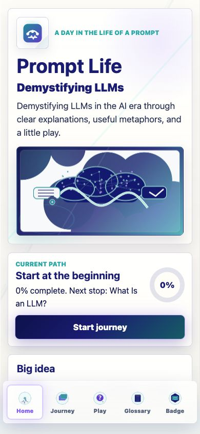
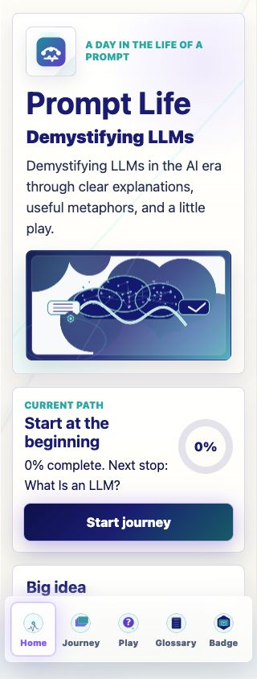
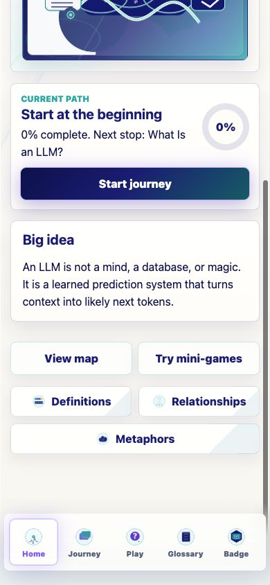

Prompt Life v0.18.2
Home Hero Refinement
Focused Home-page polish pass: sharper mission copy, stronger hierarchy, a more intentional logo area, and a stable prompt-cloud visual slot ready for future generated Home assets.
What Changed
Copy
Added the prominent Home subhead Demystifying LLMs and replaced clear mechanics with clear explanations.
Hero
The existing textless prompt-cloud image now sits in a deeper indigo/cyan/violet frame that better matches the generated asset direction.
Logo
The top mark now has a deliberate square frame and the app has a standard favicon link using the current square mark.
Layout
The Home cards use tighter spacing, with Continue Learning secondary and Big Idea peeking into the first mobile viewport.
Final Home Copy
- Eyebrow:
A DAY IN THE LIFE OF A PROMPT - Main title:
Prompt Life - Prominent subhead:
Demystifying LLMs - Tagline:
Demystifying LLMs in the AI era through clear explanations, useful metaphors, and a little play. - Big idea:
An LLM is not a mind, a database, or magic. It is a learned prediction system that turns context into likely next tokens.
Asset Readiness
- Future hero path:
public/assets/generated/home/home-hero-prompt-cloud.png - Future mark path:
public/assets/generated/home/promptlife-mark.png - Planned Home asset metadata added in
src/data/visualAssets.ts. - Current fallback hero and mark remain in use until the generated files are available.
Verification
typecheck passed build passed build:pages passed browser QA passed
npm run typecheck: passed.npm run build: passed with the existing Vite large-chunk warning.npm run build:pages: passed with the existing Vite large-chunk warning.- Mobile QA: 390px and 320px passed with no horizontal overflow and no clean-tab console errors.
Known Issues
- The current Home hero image is still the existing fallback illustration; the new generated Home hero has not been added yet.
- The existing Vite large-chunk warning remains.
Next Three Recommended Steps
- Generate and integrate the Home hero prompt-cloud asset.
- Generate and integrate the square Prompt Life mark for app icon/favicon/social use.
- After those assets land, re-check Home at 320px, 390px, and on iPhone.
Screenshots


